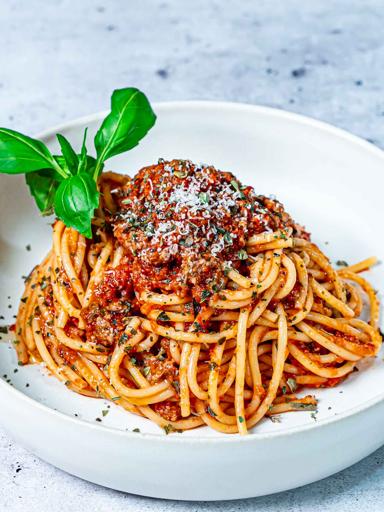

Spaghetti Bolognese
Read the recipe...
Ingredients
- 1 onion, finely diced
- 2 cloves garlic, crushed
- 3 mushrooms, finely diced
- 1 carrot (or stick of celery/capsicum), finely diced
- 4 Tbs olive oil (increase if dairy-free)
- 2 Tbs butter (optional)
- 300g mince (vegetarian)
- 150ml red wine/red wine vinegar
- pinch of sugar
- 700ml jar passata/800g canned chopped tomatoes
- 400ml water
- 2 tsp balsamic reduction
- 5 springs thyme, tough stalks removed
- 1 sprig sage, leaves roughly chopped
- 1 tsp dried oregano
- 1 small stalk of fresh rosemary, stripped and leaves roughly chopped
- 2 bay leaves
- 30g pine nuts (optional)
- 1/2 tsp salt
- 1/2 tsp cracked black pepper
- 400g dried spaghetti
- 150g cheese (optional)
Method
- Gather and prepare your ingredients
- Put the olive oil and the butter in a pot and heat it together
- One high heat, add the onion, garlic, mushrooms and carrot to fry until they start to colour
- Fry for a couple of minutes. Then add the wine
- Stir through and reduce the heat for 1 minute. Now add the jar passata, water, balsamic reduction, sprigs fresh thyme, sprig sage, oregano, rosemary, bay leaves and the pine nuts
- Simmer for 25 minutes, stirring occasionally. When thickened, season it with the salt and black pepper
- Fill another pot 3/4 full with water, cover it with a lid and bring it to boil. Afterwards at a fitting amount of salt and the spaghetti. Stir, then boil for 10 minutes or until just cooked through. Drain through a colander and put back in the pot (not on the heat though), add the sauce and mix through gently
- Grate the cheese to add to the pasta